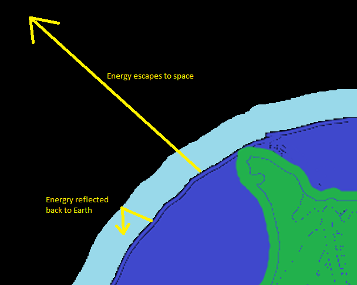

One of the key factors in balancing the energy the Earth absorbs and emits is the atmosphere. The atmosphere is made of gases like nitrogen and oxygen. When energy radiates up from the Earth's surface, these gases will let some energy pass through it, but some of it is reabsorbed or reflected back to the ground. When the energy does not pass through the atmosphere, that energy does not get sent out into space. If too much energy does not get sent out into space, then Earth's overall energy goes up.
The amount of energy that escapes to space depends on the mixture of gases in the air. One gas that stops energy from escaping the atmosphere is carbon dioxide. Carbon dioxide is produced by burning materials such as wood, gasoline and jet fuel. The amount of carbon dioxide in the atmosphere has been increasing over the last hundred years, because people have been burning more fuels in their cars and in factories and to make electrical power in power plants.
Previous Page